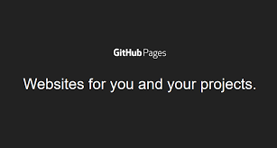

How to Upload a website from Codepen to Github pages
May 1, 2020

My task today was to upload two previously built websites from my codepen account to Github for deployment so they could be accessed over the internet via Github pages.
After creating the repositories and uploading the websites to Github, I noticed the new website link was not displaying anything at all. This happened due to the index.html and main.css files being in the wrong directory. So now I had to find a fix for the above situation and figure out how to make my website live using Github pages.
The first thing I had to do was to log into codepen and select my website in the dashboard area. Once I selected the website I had to follow the below steps:-
- Click the export button at the bottom of the page which compresses to a zip file.
- Download zip file.
- Unzip the files to the desktop folder.
- Create a new repository on Github.(make sure repo name is the same as the desktop folder name to avoid complications).
- Upload the desktop folder to the new Github repository.
Once the files have been uploaded onto Github follow the below steps:-
- Select the repository.
- Click settings in the top right hand corner.
- Scroll down to Github pages.
- Under sources click the button named “NONE” and select source as master branch.

This will now create a URL link for your website.
There is however one more problem which needs to be addressed as your website link will be displaying nothing at this point. In order to display your website correctly you must open your project folder in your favorite editor and copy index.html/main.css files from the src folder in your project and paste them to the parent directory of that same project.
The final step is to push the new changes up to Github and refresh the URL link.